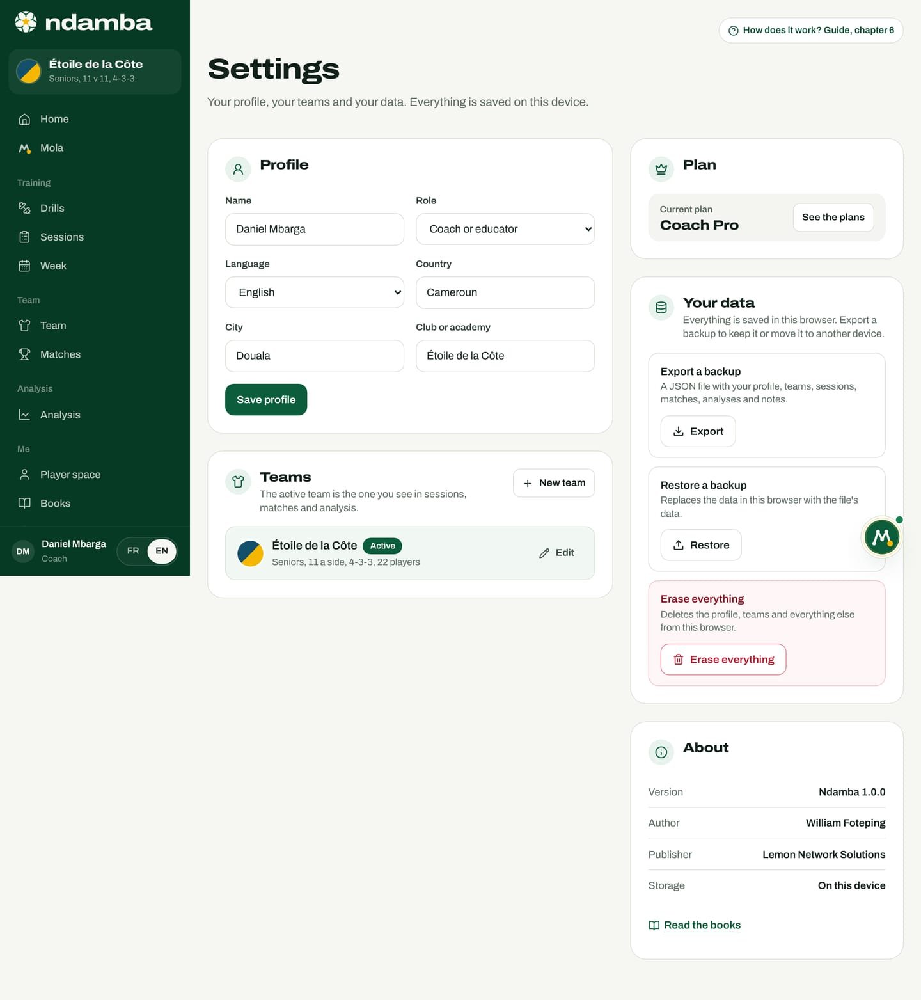

Trust, data and young players
Where your data lives, how to back it up and restore it, why there are no accounts yet, the "Nothing goes out without you" rule, exactly what the AI model receives, the place of children and parents, the house rules and what will change when accounts arrive.
14 min read
A football tool for young players touches precious things: a child’s name, their year of birth, what their coach thinks of them, how they feel today. A club or a federation also entrusts it with its way of playing. Trust is not declared, it is checked. This chapter says exactly where the data goes, what leaves the device and when, and what Ndamba refuses to do. Everything below describes the app as it is today; what will change with accounts is set out at the end.
Where your data lives
Ndamba is a "local first" app. Everything you create is saved in the browser of the device you are using, in a database the browser keeps for the site (it is called IndexedDB). There is no Ndamba data server. Settings says so in its very first line: "Everything is saved on this device." From the welcome conversation onwards, the profile card says it too: "Everything stays in this browser."
| What is saved | What it contains |
|---|---|
| The profile | Name, role, language, country, city, club, age group, position, goals, plan |
| The squad | For each player: name, number, position, year of birth, stronger foot, skill levels, notes |
| Training | Sessions, their blocks and their drills |
| Matches | The match sheet, line-up, game plan, and the tags placed on the video (with their moment in the video) or recorded live |
| The journey | Evaluations, observations, attendance, objectives, milestones |
| Daily form | Sleep, fatigue, soreness, mood, stress, perceived effort, minutes |
| The player space | Completed challenges, the notebook, the lessons marked "I’ve got it" and the "My view" self-assessment |
| Mola | The conversation and the tasks |
| Match videos | For each video: the YouTube or Facebook link, or the file name; the kick-offs, the shirt colours, the notes, the annotated frames and the AI analysis result if there is one; never the video itself |
This choice has practical consequences:
- You can work on a weak network. Live tagging says so: "The clock, the tags and the score are saved on the device with every tap, even with no network."
- Nobody else sees your data, neither Ndamba’s publisher nor another coach.
- Ndamba stores no video. With a link, the video stays on YouTube or Facebook, where you put it; Ndamba keeps only the link. With a file, the studio opens it where it is: it is never sent over the internet, and it has to be reopened on each visit. A drawing is kept together with a small still of the moment. Only the AI analysis, if you start it yourself, sends still frames of the match (see below).
- But data can be lost. Clearing the browser’s data, changing phones or working in a private window makes the space disappear if it was not backed up. Two browsers on the same phone are two separate spaces.
- A demo replaces the browser’s data. When the browser already holds your own space, the site warns you before starting it and suggests exporting a backup first.
Beside that database, the browser keeps a few items in its simple storage. The lessons marked "I’ve got it" and the "My view" self-assessment are among them, but they travel with backups. The clock of a match in progress, tagging settings, dismissed suggestions and your language choice are kept there too, but are not part of backups. Finally, in the whole of the app’s code, only two calls can send to the outside something that comes from you: the one used by Mola’s AI model (text you wrote) and the one used by the AI analysis of a match (frames of your video, after your agreement), both described below. When a video is a link, its player is provided by YouTube or Facebook, which then see that viewing as they would on their own site. The app contains no audience measurement or advertising tool, and its fonts ship with the site.
Back up, restore, erase
Backups are your responsibility, and they are the most important habit in this chapter.
To export a backup:
- Open Settings, in the Me group of the menu.
- In the Your data panel, on the Export a backup line, tap Export.
- A file named ndamba-YYYY-MM-DD.json is downloaded. It holds all your data in this browser: the profile, teams, players, sessions, matches, analyses, the match videos (links, file names, notes, drawings and AI analyses), journey, daily form, notes, the notebook, the conversation with Mola, the lessons understood and "My view".
To restore a backup, on the same device or another one:
- In Your data, on the Restore a backup line, tap Restore and choose the file.
- The "Restore this backup?" window shows the backup’s date and number of items, and warns that all the current data in this browser will be replaced.
- Confirm with Restore. If the file is not a Ndamba backup, a message says so and nothing is changed.
To start again from scratch, the Erase everything line deletes the profile, the teams and everything else from the browser, including the lessons understood and "My view", after a confirmation; your language choice is kept. It cannot be undone.


No accounts, no cloud, for now
Ndamba asks for no e-mail address, no password and no account. That choice protects you, but it has three consequences you need to know.
Nothing syncs. The coach’s tablet and a player’s phone each have their own space. A player’s journey, which the app describes like this ("Once your coach adds you to the team in Ndamba, your sessions, matches, the coach’s observations and your objectives gather here"), currently appears on the device that holds the team’s data: a club tablet, for instance, or a device where the coach’s backup was restored.
A backup is all or nothing. You cannot yet send a player just their own file. Restoring a coach’s backup on a family’s device would copy the whole squad onto it. Do not do that: person-by-person sharing will come with accounts.
The role is not a lock. The role chosen in the profile adapts the home screen and the vocabulary, but whoever holds the device sees the whole menu and all the data. Today the protection is the device itself: its lock code, and the person you lend it to.
Nothing goes out without you
Mola acts inside the app: it creates a session, plans the week, sets up a match, adds a player, creates a team, analyses the last match, recommends drills, opens a lesson or a book. Anything that would leave the app stops first: a call-up by WhatsApp, text message or e-mail, a message to copy, a calendar file. The rule is shown on Mola’s page under the title "Nothing goes out without you".
To approve what Mola has prepared:
- Open Mola, then the To approve tab. Mola’s button also flags pending actions.
- Read the text under Message. Tap Edit to change it, then Done.
- Choose the channel under Send with. The number or address is optional.
- Tap Approve and open WhatsApp (or Approve and open SMS, Approve and open e-mail, Approve and copy, Approve and download for the calendar). Your own app opens with the message ready; you choose the recipients and press Send. Mola says it itself: "I never send anything on your behalf."
- Or tap Cancel: the task ends with "Cancelled: nothing was sent".
A call-up contains the names of the players selected: you, and only you, decide where it goes.

The optional AI model: exactly what is sent
Mola runs first on a rules engine inside the app. An AI model can help it understand freely written messages, if the site’s publisher has configured a key on the server. Here is precisely how.
When. Each message you write in Mola’s chat, or tap among the suggested phrases, may be sent, except in these cases, handled entirely on the device: the welcome conversation at /bienvenue; the one-tap suggestions under "Mola noticed", which already know what to do; a plain yes or no; your answer to a detail Mola has just asked for (a date, an opponent), unless it looks like a new request; and any message written while offline. If the server replies that no key is configured, or after two failures, the app stops trying for the rest of the visit.
What goes out. A request contains:
- the text of your message, cut to 600 characters;
- the language (French or English) and today’s date;
- a short context: the active team’s name, its age group, your role, the opponent and date of the next match, and the opponent and date of the last match played;
- the names of the app and the books (Ndamba, its tagline and motto, Lionceaux, Kaydoudou and BriBri, the title of book 1, The Njangi Code).
What does not go out. The squad, the player files, notes, observations, daily form, tags and reports, videos, the notebook, phone numbers. With one exception, which you control: whatever you type. If you write "Add Samuel Owona, number 9", that name leaves with the message.
Where. To one of the site’s own functions, /api/mola. It holds the key, which is never sent to the browser. It passes the request on to the Anthropic API (the default model is claude-haiku-5-5), with the instruction to return only an intent and a few details, and a reply capped at 400 tokens. The function’s code stores nothing; the provider handles the request under its own terms.
What comes back. An intent (for example, plan the week), a few details (a date, an opponent, a playing intention) and sometimes a short sentence. The app checks each value and keeps only well-formed ones; then Mola acts with the same local code as it would without the model. The model never reads or writes your data and never sends a message. If there is no answer within 3.5 seconds, the rules engine takes over.
Without a key. The function replies that it is not configured, the rules engine answers on its own, and everything works. The app does not currently show whether the model is active: it is a server setting chosen by the publisher.
The AI analysis of a match: exactly what is sent
The AI analysis is a paid option of the video studio (chapters 14 and 24). It never starts by itself: you start it, match by match.
When. Only after three actions on your part: opening the match file on the device, typing an access code, and ticking this box: "I have the agreement of the players filmed, and of their parents for minors, to send frames of this match to Claude (Anthropic). Only frames are sent, never the video, and they are used for this analysis only." Without the box ticked, the Start the AI analysis button stays greyed out.
What is sent. Still frames taken from the file, one every 4, 6 or 10 seconds as you choose, in JPEG format, 960 pixels wide, in batches of about a dozen; with each one, its moment in the video and the direction of attack. Added to them: the shirt colours you typed, the language and the access code. At the end, a last request sends the figures computed on the device and the short notes returned by the model, to get the written summary.
What is not sent. The video itself, its link, the file name, the players’ names, the squad, the tags, the reports and all the rest of your data.
Where. To a function of the site itself, /api/analyse. It holds the Anthropic API key and checks the access code; it refuses requests that are too heavy and passes the frames to the model (claude-opus-5-5 by default, adjustable by the site owner). The code of this function records nothing; the provider handles the request under its own terms.
What comes back. For each frame: the phase (us, them, contested ball, dead ball), the third where the ball is, the height of our block, the number of our players behind the ball, sometimes a short note and a "watch again" flag. Then a summary of a few sentences. The app checks every value and saves the result on the device, with the video. The model identifies no player, neither reads nor writes your data, and never changes the Njangi Index, which always comes from tagging.
Without a key and codes. The function replies that it is not configured, the studio says the AI analysis is not activated on this site yet, and nothing is sent.
Young players and minors
A player under 16 gets a home screen designed for their age: today’s challenge, their experience points, streak and stage, the lesson of the day from the novel, the next match with a simple reminder ("pack your bag and go to bed early the night before"), their notebook and their journey. The journey follows age rules written into the app: "Under 13: simple markers, never a ranking." and "13 to 16: progress and match markers, no ranking." The performance space only arrives at 16. Health advice sits in the player space: "Drink water" and "One day a week without challenges. […] If it hurts, stop and tell your coach or your parents."

There is no advertising in Ndamba, no messaging between users, no public profile and no comments. Mola only talks to the person holding the device and never contacts anyone.
The parent role. A parent chooses the Parent role during the welcome conversation; Mola then asks: "How old is your child, or which age group do they play in?" Their home screen is the child’s youth space, with a For parents box: "Fifteen minutes, a wall and a ball are enough. Stay close, help count and remind them to drink water." The parent keeps this youth space even as the child grows older. Our advice: for a child under 13, the parent creates the space on a family device and keeps it.

Filming young players. A match video shows children. Ask the parents’ agreement before filming, publish on YouTube as "unlisted" (only those who have the link can see it) rather than public, and share the link with the team only. A video posted on Facebook must be public to show in Ndamba: for minors, prefer unlisted YouTube or a file kept on the device. And the AI analysis asks, through its tick box, for the agreement of the players filmed and of their parents.
For coaches. The squad only asks for the year of birth, not the full date, and that is enough. Keep notes factual and kind: they are part of the backups. Daily form touches on health: ask for it only from those who benefit from it, and read it with care.
The house rules
- No real players, with one exception: Roger Milla, mentioned for the history of 1990. No real coaches. The clubs and people in the demos (Étoile de la Côte, Daniel Mbarga, Steve Ndjock, the Lionceaux de Bonamoussadi, BriBri, Estelle) are fictional.
- No invented results. The Njangi Index is calculated from your own tags, with the formulas of The Njangi Code (chapter 32), and the report reminds you that its benchmarks are "to calibrate on your own matches". The football facts quoted are checked and dated.
- No invented testimonials, partners or numbers. Targets are always presented as targets.
- Mola never claims to have done what it has not done. The instruction given to the model forbids it, and every action runs through the app’s code, with visible steps that tick off one by one.
What will change with accounts
Accounts and sync are planned for stage 2 of the plan (2028 to 2029), along with the staff accounts of the Club and academy plan. This guide proposes the principles that their arrival will have to respect. They are commitments to keep, not features already built:
- a parent’s consent for any account belonging to a minor;
- everyone sees only what concerns them: a player their own journey, a parent their child’s, a staff their team;
- the app stays local first: you work without a network, and sync follows;
- exporting a backup always remains possible;
- the "Nothing goes out without you" rule does not change;
- data hosting and the protection of minors are discussed with clubs and federations before anything goes live.